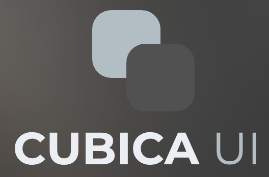

Leyes de la Gestalt
Documentación detallada sobre cómo la psicología de la percepción afecta la disposición de elementos en pantallas y flujos de usuario.
Leer más sobre Gestalt »
Maquetar interfaces accesibles requiere basarse en estándares internacionales. A continuación, compartimos los recursos fundamentales que aplicamos en nuestros desarrollos.
Documentación detallada sobre cómo la psicología de la percepción afecta la disposición de elementos en pantallas y flujos de usuario.
Leer más sobre Gestalt »Guías oficiales para asegurar que los componentes de maquetación, contrastes de color y textos sean legibles para cualquier usuario.
Ver pautas de la W3C »Revisá estos contenidos audiovisuales para complementar el estudio de las interfaces y el diseño web:
Presentación interna de nuestro espacio de trabajo y metodologías de interfaz.
Un repaso interactivo por los conceptos clave de la comunicación visual en la Web.
Escuchá a nuestros especialistas analizar el impacto de la proximidad y la semejanza en las interfaces actuales.